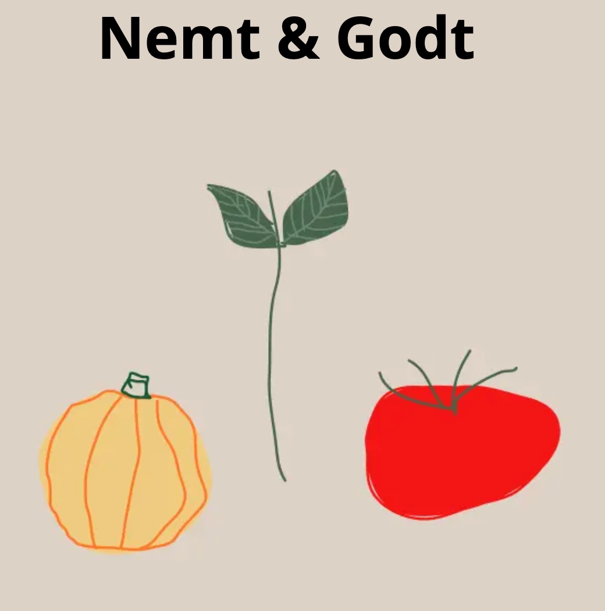

Grundlæggende UX/UI
Tema beskrivelse
“Grundlæggende UX/UI” var vores 2.tema.Udvikling af processer, design, styletile og prototyper. Fonte - hvordan finder man dem og hvordan implementeres det rigtig i kodning. Introduktion til Mobile-first.
Se projekt
Min arbejdes Proces
I temaet måtte vi selv vælge hvad indholdet skulle være på vores emnesite.
Som start lavede jeg en skriftlig brainstorm på hvilke ideer jeg kunne arbejde med og som gav mening. Ud fra brainstormen kom jeg frem til følgende: Jeg var lige flyttet hjemmefra på det tidspunkt, så jeg fik en ide om at mit indhold skulle være opskrifter til studerende eller/udeboende. Jeg lavede et Moodboard ud fra tre værdiord og ud fra det jeg fik inspiration af. Derfra lavede jeg styletiles som jeg kunne bruge til min prototype. Hermed font og farvevalg.
Jeg fik lavet en Wireframe og prototype af mit emnesite, så jeg kunne få et overblik over mit design. Da jeg var færdig med min prototype, lavede jeg en “tænk højt test” med og ud fra den feedback, lavede jeg lidt justeringer inden jeg kodede. Temaet sluttede af med at vi skulle fremlægge vores emnesite i små grupper hvor vi gav hinanden feedback.
Værktøjer jeg har brugt i forløbet
-
Moodboard
-
Wireframes
-
Prototype
-
Styletile
-
tekst